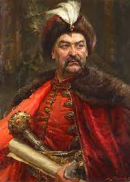

Богдан Хмельницький
Біографія
Богда́н (Зино́вій-Богда́н) Хмельни́цький гербу Абданк (27 грудня 1595 (6 січня 1596)[1][2] — 27 липня (6 серпня) 1657) — політик, полководець і дипломат, провідник Національно-визвольних змагань 1648—1657 років, творець Української козацької держави та її перший гетьман.
Перемога у Батозькій битві 1—2 червня (22—23 травня) 1652 року дала можливість вибороти Українській державі фактичну незалежність. Гетьманство Богдана Хмельницького зумовило перелом у суспільно-політичному житті Європи, на терені якої з'явилась, хоч і ненадовго, суверенна Україна з усіма атрибутами політичної та економічної влади. Були визначені кордони Української держави у межах давніх українських земель.
Враховуючи вразливість геополітичного становища Української держави, намагався зіграти на суперечностях між Річчю Посполитою, Московією та Османською імперією (обіцяючи прийняти протекцію відповідно царя і султана). Представник роду Хмельницьких. Вважається національним героєм України.
Родина
Дружини
Богдан Хмельницький був одружений тричі:
-
перша дружина його Ганна Сомківна — дочка багатого переяславського купця, мати всіх його дітей. З нею Богдан взяв шлюб близько 1623 року[18] (чи у період 1625—1627 років). Померла передчасно;
-
другий шлюб на початку 1649 року зв'язав його з колишньою жінкою його ворога Чаплинського — Мотроною, найбільшим коханням гетьмана, яка була страчена його сином Тимошем у травні 1651 року за підозрою у зраді;
-
влітку 1651 року Богдан Хмельницький одружився втретє з Ганною Золотаренківною, міщанкою з Корсуня, вдовою полковника Мартина Пилипенка. Радниця Хмельницького і розпорядник сімейного скарбу, вона надовго пережила його, і у 1671 році стала черницею з ім'ям Анастасія Києво-Печерського жіночого монастиря.
Діти
Дослідники вважають, що у гетьмана було троє синів і чотири доньки:
-
старший син Тимофій (Тиміш), народився 1632 року, був одружений у 1652 році з донькою молдавського господаря Василя Лупула — Розандою (Роксандою). Його Хмельницький вважав своїм спадкоємцем, але Тиміш загинув 15 вересня 1653 року, смертельно поранений під час облоги молдавської фортеці Сучави, яку він боронив зі своїм козацьким військом, захищаючи тестя — Василя Лупула. Він залишив двоє дітей-близнят, доля яких невідома;
-
молодший син Хмельницького — Юрій (Юрась) народився 1641 року, навчався у Києво-Могилянській колегії, і 1657 року за життя батька був обраний гетьманом-наступником при регенті Івані Виговському, який 27 серпня 1657 року перебрав булаву. Згодом Юрась двічі був гетьманом (раз від поляків на Лівобережній Україні, вдруге після 9 років османської в'язниці Семи Веж (Еди-Куле), був в інтересах султана проголошений гетьманом 1678 в Україні). Загинув 1679 у битві під Кизикерменом.
-
дочка Хмельницького — Катерина (Олена) була одружена з Данилом Виговським, і після його смерті в московському полоні стала другою дружиною гетьмана Павла Тетері. Померла у 1668 році;
-
друга дочка — Степанида (Степанія) була дружиною Івана Нечая. Їхнє весілля відбулося у середині 1650 року. 4 грудня 1659 року під час облоги Бихова Степаниду разом з чоловіком взято у полон. Припускають, що її заслано в Сибір;
-
імена двох інших дочок гетьмана — одна з них була за корсунським сотником Глизьком (Улезком), який загинув у війні з Річчю Посполитою у 1655 році, друга вийшла за новгород-сіверського козака Л. Мовчана (1654 рік), — лишилися невідомими.
Оцінки діяльності
Українська держава Богдана Хмельницького викликала захоплення численних сучасників — дипломатів, мандрівників, літописців. Італієць Альберто Віміна, який особисто бачив гетьмана 1656 року й неодноразово розмовляв з ним, у своїх спогадах пише про український народ у період його найвищого злету в часи Хмельниччини. Особливо його вразила демократична форма правління козаків — скликання Ради для обговорення важливих державних питань, коли козаки у присутності гетьмана спільно їх вирішують. Подорожні нотатки сирійського архідиякона Павла Алеппського, який описав подорож антіохійського патріарха Макарія Україною у 1654 і 1656 роках, зафіксували для нас подробиці побуту і звичаїв українців, які здивували його тим, що скрізь зустрічали хлібом-сіллю як символом добробуту.
Польський історик Людвік Кубаля, котрий присвятив багато років дослідженню життя й діяльності Богдана Хмельницького, порівнював українського гетьмана з його сучасником — вождем Англійської революції середини XVII століття Олівером Кромвелем, відзначаючи при цьому, що завдання у Богдана Хмельницького виявилося набагато складнішим, оскільки «він не мав у своєму розпорядженні вишколеної інтелігенції й засобів старої, сильної держави. Військо, фінанси, державне господарство, адміністрація, відносини з сусідніми державами — все це треба було створити… Він мусив добирати і вчити людей. Була то людина з кожного погляду надзвичайних вимірів, він переростав талановитих людей настільки, що переступав межі збагненного».

У літопису «Історія хана Іслама Гірая III» кримсько-татарського автора Гаджі Мехмеда Сенаї Киримли відчувається вельми позитивний пієтет літописця щодо Богдана Хмельницького, якого він називає хоробрим, безстрашним богатирем і лідером «Дніпровського козацтва», а також «від природи толерантного до ісламської релігії та як особу, що заслуговувала на пошану з боку релігії ісламу». В османських рукописних джерелах фігурують такі величальні слова на адресу гетьмана, як «гордість всіх правителів від християнської релігії, правитель вільної та свобідної нації». Цей факт є свідченням не лише дипломатичного визнання гетьмана Богдана Хмельницького, а й поваги з боку уряду Османської імперії й до українського козацтва.